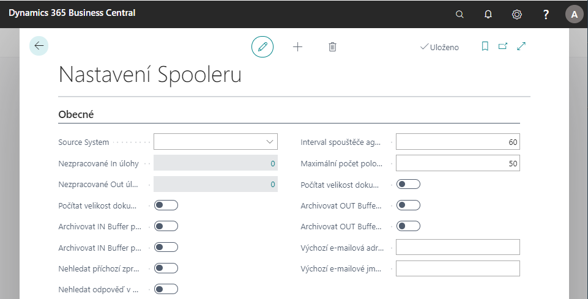

Nastavení Spooleru
Spooler slouží pro komunikaci systému Business Central s externími systémy nebo datovými zdroji.
Základní nastavení Spooleru
Pro nastavení spooleru postupujte následujícím způsobem:
- Vyberte ikonu
 , zadejte Nastavení spooleru a klikněte na související odkaz.
, zadejte Nastavení spooleru a klikněte na související odkaz. - Otevře se stránka Nastavení spooleru, kde jsou nastavovací a informativní pole:
- Source System, které označuje zdrojový systém - jak se daný systém v komunikaci identifikuje.
- Nezpracované In úlohy a *Nezpracované Out úlohy zobrazují počet nezpracovaných úloh v In Bufferu nebo Out Bufferu
- Počítat velikost dokumentu IN Bufferu a Počítat velikost dokumentu OUT Bufferu určují, zda se mají počítat velikosti dokumentů zobrazovaných v IN a OUT Bufferech.
- Archivovat IN Buffer při zpracování a Archivovat IN Buffer při expiraci určují, kdy a jestli se mají položky IN Bufferu archivovat.
- Archivovat OUT Buffer při zpracování a Archivovat OUT Buffer při expiraci určují, kdy a jestli se mají položky OUT Bufferu archivovat.
- Nehledat příchozí zprávu v archívu určuje, zda se má hledat příchozí zpráva dle jednoznačného identifikátoru GUID (ID dokumentu) v archivovaných položkách.
- Nehledat odpověď v archívu určuje, zda se má hledat odpověď dle jednoznačného identifikátoru GUID (ID dokumentu) v archivovaných položkách.
- Maximální počet položek v Bufferu omezuje počet položek. Pokud se zadá hodnota 0, jedná se o neomezený počet položek v Bufferech.
- Pole Certifikát Pfx – pokud * tak pole zobrazuje, že je zde uložen elektronický podpis.
- Pole Cesta k certifikátu Pfx se využívá, pokud není certifikát uložen přímo v databázi.
- Heslo k certifikátu Pfx - vyplněno pokud se používá.
- Nepovolit elektronické podepisování slouží k zapínání a vypínání použití elektronického podpisu. Volba nezaškrtnuto znamená nepoužívat elektronický podpis.

- Pro import elektronického podpisu, použijte Certifikát Pfx a dále funkci Impotovat....
- Podpis je možné dále zobrazit, exportovat nebo smazat pomocí funkcí Exportovat, Odstranit a Ukázat.
- Stránku následně můžete zavřít.
Agenti Spooleru
Pro nastavení agentů spooleru postupujte následujícím způsobem:
- Vyberte ikonu , zadejte Agenti a klikněte na související odkaz.
Otevře se stránka Agenti, kde musíte vyplnit následující pole:
- pole ID agenta a Popis slouží k evidenčnímu rozlišení agentů.
- Typ rozlišuje agenty
- IN - slouží pro příchozí komunikace. Přijímá zprávy z okolí a ukládá je do IN Bufferu.
- OUT - prochází OUT Buffer a odesílá zprávy do okolí.
- Procesní - prochází úlohy v IN Bufferu, zpracovává úlohy IN Bufferu a ukládá je do OUT Bufferu.
- ID codeunity agenta se nastaví automaticky, ale dá se přepsat na jinou.
- Interval komunikace (s) slouží pro aktivní agenty. Určuje, v jakém časovém intervalu se aktivuje a vykonává činnost.
- Přídavné parametry komunikace využívají v podstatě aktivní agenti. Někteří agenti mohou mít více parametrů. Např. Diskový agent může sbírat data z více adresářů.
- Pro IN Agenty slouží pole ID výchozí úlohy. Pokud se úloha Spooleru nenajde dle hlavičky XML, vezme se výchozí úloha.
- Změnit agenta po počtu chyb je pouze pro OUT Agenty a Procesní Agenty. Pokud se agentovi nepodaří úlohu zpracovat (např. 5 chyb) lze nastavit do pole Změnit na agenta ID nového agenta, který se pokusí úlohu zpracovat.
- Logovat určuje, zda a jak se zapisuje do aplikačního logu. Hodnoty mohou být Nikdy, Dle úlohy a Vždy.
- Odpovídat pouze na XML je pro IN Agenty TCP a ukazuje, zda se bude odpovídat pouze na XML
- Druh komunikace a Parametr komunikace je pouze pro IN Agenty. Parametr komunikace se nastavuje dle zvoleného druhu komunikace:
- TCP – port [čárka] Timeout
- MSMQ – název MSMQ
- Pipe – název named PIPE
- HTTP – adresa http
- Disk – cesta [čárka] filtr souboru
- Pro Diskového a HTTP (timer) In agenta je možné nastavit ID výchozí úlohy pro každý parametr komunikace, aby bylo možné rozlišit, jakým typem úlohy bude přijatá zpráva následně zpraco vána.
- Všichni agenti jsou buď tzv. pasivní, nebo aktivní. Aktivní agent se sám aktivuje a vykonává nějakou činnost. Pasivní agent čeká na podnět zvenčí, na nějaké přerušení systému a na tuto změnu reaguje.
- Pasivní agent běží sám na aplikačním serveru. IN Agent TCP a IN Agent MSMQ jsou pasivní agenti.
- Po vyplnění polí je možno stránku zavřít.
- Pokud uživatel potřebuje spustit agenta ručně, může to povést ve skupině Zpracovat funkcí Spusť agenta.